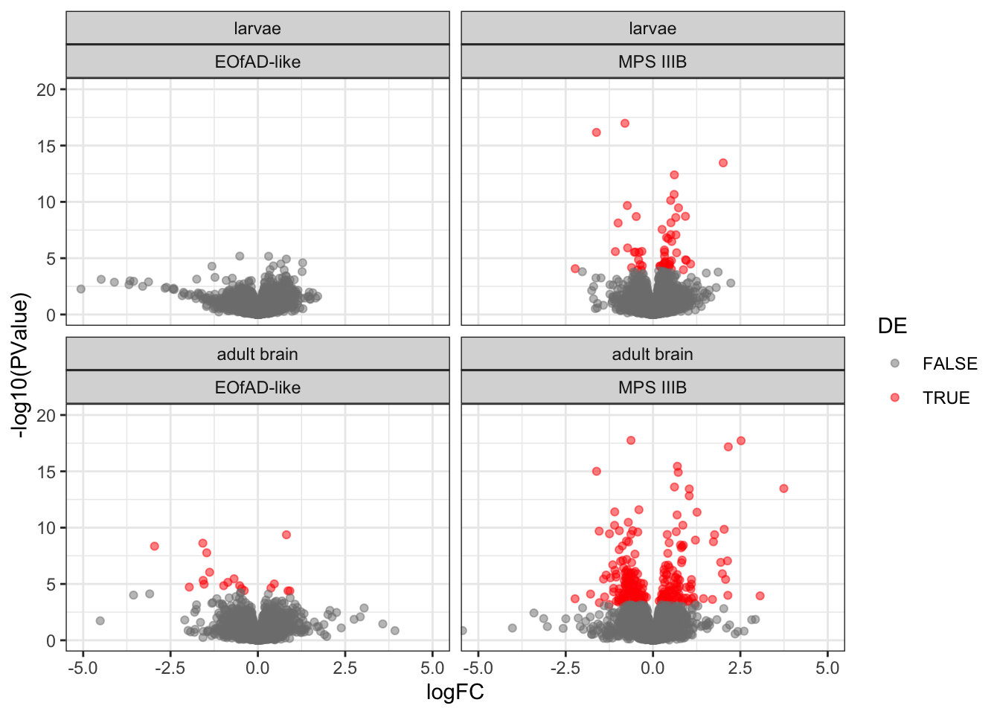

analysis_final
Karissa Barthelson
2023-06-28
Last updated: 2023-09-02
Checks: 6 1
Knit directory: 2021_MPSIIIBvQ96-RNAseq-7dpfLarve/
This reproducible R Markdown analysis was created with workflowr (version 1.7.0). The Checks tab describes the reproducibility checks that were applied when the results were created. The Past versions tab lists the development history.
The R Markdown is untracked by Git. To know which version of the R Markdown file created these results, you’ll want to first commit it to the Git repo. If you’re still working on the analysis, you can ignore this warning. When you’re finished, you can run wflow_publish to commit the R Markdown file and build the HTML.
Great job! The global environment was empty. Objects defined in the global environment can affect the analysis in your R Markdown file in unknown ways. For reproduciblity it’s best to always run the code in an empty environment.
The command set.seed(20211120) was run prior to running the code in the R Markdown file. Setting a seed ensures that any results that rely on randomness, e.g. subsampling or permutations, are reproducible.
Great job! Recording the operating system, R version, and package versions is critical for reproducibility.
Nice! There were no cached chunks for this analysis, so you can be confident that you successfully produced the results during this run.
Great job! Using relative paths to the files within your workflowr project makes it easier to run your code on other machines.
Great! You are using Git for version control. Tracking code development and connecting the code version to the results is critical for reproducibility.
The results in this page were generated with repository version 9f57eae. See the Past versions tab to see a history of the changes made to the R Markdown and HTML files.
Note that you need to be careful to ensure that all relevant files for the analysis have been committed to Git prior to generating the results (you can use wflow_publish or wflow_git_commit). workflowr only checks the R Markdown file, but you know if there are other scripts or data files that it depends on. Below is the status of the Git repository when the results were generated:
Ignored files:
Ignored: .DS_Store
Ignored: .Rapp.history
Ignored: .Rhistory
Ignored: .Rproj.user/
Ignored: analysis/figure/
Ignored: data/.DS_Store
Ignored: data/R_objects/.DS_Store
Ignored: data/R_objects/larvae/.DS_Store
Ignored: data/adult_brain/.DS_Store
Ignored: data/adult_brain/05_featureCounts/.DS_Store
Ignored: data/gene_sets/.DS_Store
Ignored: data/larvae/.DS_Store
Ignored: data/larvae/fastqc_align/.DS_Store
Ignored: data/larvae/fastqc_align_dedup/.DS_Store
Ignored: data/larvae/fastqc_raw/.DS_Store
Ignored: data/larvae/fastqc_trim/.DS_Store
Ignored: data/larvae/featureCounts/.DS_Store
Ignored: data/larvae/meta/.DS_Store
Ignored: data/larvae/starAlignLog/.DS_Store
Ignored: output/.DS_Store
Ignored: output/plots/
Ignored: output/plots4pub/
Untracked files:
Untracked: analysis/6mBrain_fems.rmd
Untracked: analysis/analysis_final.rmd
Untracked: analysis/checkGenotypes.rmd
Untracked: analysis/nhi6mdata.rmd
Untracked: analysis/plots4pub2.rmd
Untracked: code/Snakefile
Untracked: data/Nhi_data/
Untracked: data/R_objects/adult_brain/celltypeNhi.rds
Untracked: data/R_objects/adult_brain/dgeNhi.rds
Untracked: data/R_objects/adult_brain/fryGoNhi.rds
Untracked: data/R_objects/adult_brain/hmp_ireNhi.rds
Untracked: data/R_objects/adult_brain/hmp_keggNhi.rds
Untracked: data/R_objects/adult_brain/logcpmNhi.rds
Untracked: data/R_objects/adult_brain/toptablescqnNhi.rds
Untracked: dre00190.pathview.multi.png
Untracked: dre00190.png
Untracked: dre00190.xml
Untracked: dre00511.pathview.multi.png
Untracked: dre00511.png
Untracked: dre00511.xml
Untracked: dre00531.png
Untracked: dre00531.xml
Untracked: dre03010.png
Untracked: dre03010.ribsome.multi.png
Untracked: dre03010.xml
Untracked: dre04142.pathview.multi.png
Untracked: dre04142.png
Untracked: dre04142.xml
Untracked: output/GEOcounts_adult.out
Untracked: output/plots4poster/
Untracked: output/plots4talk/
Untracked: output/spreadsheets/
Unstaged changes:
Modified: analysis/analysis.Rmd
Modified: analysis/analysis_adultbrain.rmd
Modified: code/plots4pub.Rmd
Modified: data/R_objects/adult_brain/celltype.rds
Modified: data/R_objects/adult_brain/dge.rds
Modified: data/R_objects/adult_brain/hmp_ire.rds
Modified: data/R_objects/adult_brain/hmp_kegg.rds
Modified: data/R_objects/adult_brain/logcpm.rds
Modified: data/R_objects/adult_brain/toptablescqn.rds
Modified: data/R_objects/larvae/celltype_larvae.rds
Modified: data/R_objects/larvae/dge.rds
Modified: data/R_objects/larvae/hmp_ire.rds
Modified: data/R_objects/larvae/hmp_kegg.rds
Modified: data/R_objects/larvae/logcpm.rds
Modified: data/R_objects/larvae/toptablescqn.rds
Modified: data/adult_brain/karissas_metadata.xlsx
Modified: dre04512.pathview.multi.png
Note that any generated files, e.g. HTML, png, CSS, etc., are not included in this status report because it is ok for generated content to have uncommitted changes.
There are no past versions. Publish this analysis with wflow_publish() to start tracking its development.
library(tidyverse)
library(magrittr)
library(readxl)
# Bioc
library(ngsReports)
library(AnnotationHub)
library(msigdbr)
library(edgeR)
library(goseq)
library(fgsea)
library(cqn)
library(harmonicmeanp)
library(ssizeRNA)
library(clusterProfiler)
library(variancePartition)
# vis
library(pander)
library(UpSetR)
library(scales)
library(pheatmap)
library(ggpubr)
library(ggrepel)
library(ggfortify)
library(ggforce)
library(RColorBrewer)
library(colorspace)
library(pathview)
theme_set(theme_bw())ah <- AnnotationHub() %>%
subset(species == "Danio rerio") %>%
subset(rdataclass == "EnsDb")
ensDb <- ah[["AH83189"]] # for release 101, what the ge
grTrans <- transcripts(ensDb)
trLengths <- exonsBy(ensDb, "tx") %>%
width() %>%
vapply(sum, integer(1))
mcols(grTrans)$length <- trLengths[names(grTrans)]
gcGene <- grTrans %>%
mcols() %>%
as.data.frame() %>%
dplyr::select(gene_id, tx_id, gc_content, length) %>%
as_tibble() %>%
group_by(gene_id) %>%
summarise(
gc_content = sum(gc_content*length) / sum(length),
length = ceiling(median(length))
)
grGenes <- genes(ensDb)
mcols(grGenes) %<>%
as.data.frame() %>%
left_join(gcGene) %>%
as.data.frame() %>%
DataFrame()# read in metadata and cleanup column names and types.
meta <- list(larvae = read_excel("data/larvae/meta/naglu_v_Q96_larvae_metadata.xlsx", sheet = 3) %>%
na.omit() %>%
left_join(read_excel("data/larvae/meta/naglu_v_Q96_larvae_metadata.xlsx", sheet = 5) %>%
mutate(temp1 = str_split(temp, pattern = " ")) %>%
mutate(ULN = lapply(temp1, function(x){
x %>%
.[1]
}),
sample_name = lapply(temp1, function(x){
x %>%
.[2]
}),
RIN = lapply(temp1, function(x){
x %>%
.[4]
})
) %>%
unnest() %>%
dplyr::select(ULN, sample_name, RIN) %>%
na.omit() %>%
unique
) %>%
mutate(Genotype = case_when(
`naglu genotype` == "wt" & `psen1 genotype` == "wt" ~ "wt",
`naglu genotype` == "A603fs/A603fs" & `psen1 genotype` == "wt" ~ "MPS IIIB",
`naglu genotype` == "wt" & `psen1 genotype` == "Q96_K97del/+" ~ "EOfAD-like",
) %>%
factor(levels = c("wt", "MPS IIIB", "EOfAD-like")),
sample = paste0(Genotype, "_", ULN),
RIN = as.numeric(RIN),
age = "7 dpf"
) %>%
as_tibble(),
adult = read_excel("data/adult_brain/karissas_metadata.xlsx", sheet = "onlyseq") %>%
mutate(Genotype = case_when(
`usable genotype?` == "wt" ~ "wt",
`usable genotype?` == "EOfAD" ~ "EOfAD-like",
`usable genotype?` == "MPS-III" ~ "MPS IIIB"
) %>%
factor(levels = c("wt", "MPS IIIB", "EOfAD-like")),
tank = as.factor(tank),
sex = as.factor(sex),
sample = paste0(fish, "_", Genotype),
age = "6 m adult brain",
RIN = as.numeric(`RIN/DIN`)
) %>%
as_tibble()
)
# read in the outputs of featurecounts.
featureCounts <- list(
larvae = read_delim("data/larvae/featureCounts/counts.out", delim = "\t", skip = 1) %>%
set_names(basename(names(.))) %>%
set_names(names(.) %>% str_remove(pattern = "_S1_merged.Aligned.sortedByCoord.dedup.out.bam")) %>%
as_tibble() %>%
dplyr::select(-c(Chr, Start, End, Length, Strand)) %>%
gather(key = "ULN", value = "counts", starts_with("21")) %>%
left_join(meta$larvae) %>%
dplyr::select(Geneid, counts, sample) %>%
spread(key = "sample", value = "counts") %>%
column_to_rownames("Geneid"),
adult = read_delim("data/adult_brain/05_featureCounts/counts.out", delim = "\t", skip = 1) %>%
set_names(basename(names(.))) %>%
set_names(names(.) %>% str_remove(pattern = "_S[0-9]+_merged.Aligned.sortedByCoord.dedup.out.bam")) %>%
as_tibble() %>%
dplyr::select(-c(Chr, Start, End, Length, Strand)) %>%
gather(key = "ULN", value = "counts", starts_with("22")) %>%
left_join(meta$adult) %>%
mutate(sample = paste0(fish, "_", Genotype)) %>%
dplyr::select(Geneid, counts, sample) %>%
spread(key = "sample", value = "counts") %>%
column_to_rownames("Geneid") %>%
.[,1:24]
)
# write out the cleaned up output for uploading to GEO
#write_csv(rownames_to_column(featureCounts$larvae, "gene_id"), "output/GEOcounts.out")
#write_csv(rownames_to_column(featureCounts$adult, "gene_id"), "output/GEOcounts_adult.out")filter lowly expressed genes
Genes which are lowly expressed are considered uninformative for de analysis. Here, we set the threshold to be a min CPM of 0.5 (following the 10/min lib size rule proposed by gordon smyth). The effect of filtering is found below
filteringPlots <- lapply(featureCounts, function(x) {
a <- x %>%
cpm(log = TRUE) %>%
as.data.frame() %>%
pivot_longer(
cols = everything(),
names_to = "sample",
values_to = "logCPM"
) %>%
split(f = .$sample) %>%
lapply(function(x){
d <- density(x$logCPM)
tibble(
sample = unique(x$sample),
x = d$x,
y = d$y
)
}) %>%
bind_rows() %>%
ggplot(aes(x, y, group = sample)) +
geom_line() +
labs(
x = "logCPM",
y = "Density"
)+
ggtitle("Before filtering")
b <- x %>%
.[rowSums(cpm(.) >= 0.5) >= 8,] %>%
cpm(log = TRUE) %>%
as.data.frame() %>%
pivot_longer(
cols = everything(),
names_to = "sample",
values_to = "logCPM"
) %>%
split(f = .$sample) %>%
lapply(function(x){
d <- density(x$logCPM)
tibble(
sample = unique(x$sample),
x = d$x,
y = d$y
)
}) %>%
bind_rows() %>%
ggplot(aes(x, y, group = sample)) +
geom_line() +
labs(
x = "logCPM",
y = "Density",
)+
ggtitle("After filtering")
ggarrange(a, b)
})filteringPlots$larvae +
ggtitle("Larvae")Effect of filtering in larvae
filteringPlots$adult Effect of filtering in adult brain
x.larvae <- featureCounts$larvae %>%
as.matrix() %>%
.[rowSums(cpm(.) >= 0.5) >= 8,] %>%
DGEList(
samples = tibble(sample = colnames(.)) %>%
left_join(meta$larvae),
genes = grGenes[rownames(.)] %>%
as.data.frame() %>%
dplyr::select(
chromosome = seqnames, start, end,
gene_id, gene_name, gene_biotype, description, entrezid
) %>%
left_join(gcGene) %>%
as_tibble()
) %>%
calcNormFactors()
x.adult <- featureCounts$adult %>%
as.matrix() %>%
.[rowSums(cpm(.) >= 0.5) >= 8,] %>%
DGEList(
samples = tibble(sample = colnames(.)) %>%
left_join(meta$adult),
genes = grGenes[rownames(.)] %>%
as.data.frame() %>%
dplyr::select(
chromosome = seqnames, start, end,
gene_id, gene_name, gene_biotype, description, entrezid
) %>%
left_join(gcGene) %>%
as_tibble()
) %>%
calcNormFactors()PCA
I first want to explore the overall similarity between samples by PCA. No distinct clusters of samples are observed by genotype in lavrae
# custom function to plot by genotype
plotPCA <- function(dge, colourFactor, shapeFactor, colour)
{dge %>%
cpm(log=TRUE) %>%
t() %>%
prcomp() %>%
autoplot(data = tibble(sample = rownames(.$x)) %>%
left_join(dge$samples),
colour = colourFactor,
shape = shapeFactor,
size = 6
) +
theme(aspect.ratio = 1) +
scale_color_manual(values = colour)
}
# use to make the plots
ggarrange(plotPCA(dge = x.larvae,
colourFactor = "Genotype",
shapeFactor = 16, # circles
colour = viridis_pal(end = 0.95)(3)) + # yelllow hard to see
ggtitle("Larvae"),
plotPCA(dge = x.adult,
colourFactor = "Genotype",
shapeFactor = "sex",
colour = viridis_pal(end = 0.9)(3)) +
ggtitle("Adult"),
common.legend = T)There is a clear outlier sample in each experiment. Is it due to the RNA integrity number (RIN)? DOes not appear so.
plotPCA.RIN <- function(dge)
{dge %>%
cpm(log=TRUE) %>%
t() %>%
prcomp() %>%
autoplot(data = tibble(sample = rownames(.$x)) %>%
left_join(dge$samples),
colour = "RIN",
size = 6
) +
theme_bw() +
theme(aspect.ratio = 1) +
scale_color_viridis_c(option = "inferno", end = 0.9)
}
ggarrange(plotPCA.RIN(dge = x.larvae) +
ggtitle("Larvae"),
plotPCA.RIN(dge = x.adult) +
ggtitle("Adult"),
common.legend = T)What about the initial amount of RNA that was extracted? Maybe for the larvae.
ggarrange(
x.larvae %>%
cpm(log=TRUE) %>%
t() %>%
prcomp() %>%
autoplot(data = tibble(sample = rownames(.$x)) %>%
left_join(x.larvae$samples),
colour = "conc.after.Dnase",
size = 6
) +
scale_color_viridis_c(option = "inferno", end = 0.9) +
ggtitle("larvae"),
x.adult %>%
cpm(log=TRUE) %>%
t() %>%
prcomp() %>%
autoplot(data = tibble(sample = rownames(.$x)) %>%
left_join(x.adult$samples),
colour = "conc.ng.uL.2",
size = 6
) +
scale_color_viridis_c(option = "inferno", end = 0.9) +
ggtitle("adult")
) &
theme(legend.position = "top")Check genotypes
This is in the checkGenotypes.rmd file. All fish carry the genotypes indicated from the PCR genotyping.
%GC and Length check
designlist <- list(larvae = model.matrix(~Genotype, data = x.larvae$samples) %>%
set_colnames(gsub(colnames(.), pattern = "Genotype", replacement = "")),
adult = model.matrix(~Genotype + tank + sex, data = x.adult$samples %>%
droplevels()) %>%
set_colnames(gsub(colnames(.), pattern = "Genotype", replacement = ""))
)
fits_1 <- list(larvae = x.larvae %>%
estimateDisp(designlist$larvae) %>%
glmFit(designlist$larvae),
adult = x.adult %>%
estimateDisp(designlist$adult) %>%
glmFit(designlist$adult)
)# Call the toptable
calltoptab <- function(coefs, fit) {
coefs %>%
sapply(function(x){
glmLRT(fit, coef = x) %>%
topTags(n = Inf) %>%
.[["table"]] %>%
as_tibble() %>%
arrange(PValue) %>%
mutate(
coef = x,
DE = FDR < 0.05
) %>%
dplyr::select(
gene_name, logFC, logCPM, PValue, FDR, DE, everything()
)}, simplify = FALSE)
}
toptables_1 <- list(
larvae = calltoptab(coefs = designlist$larvae %>% colnames %>% .[2:3],
fit = fits_1$larvae) %>%
sapply(function(x) {mutate(x , age = "larvae")}, simplify = F),
adult = calltoptab(coefs = designlist$adult %>% colnames %>% .[2:3],
fit = fits_1$adult) %>%
sapply(function(x) {mutate(x , age = "adult brain")}, simplify = F)
)Vis
These plots are zoomed in between -5 and 5 on the y-axis for vis purposes. the blue lines of best fit are a bit wonky, particulaly for EOfAD in adults. meaning there are some biases here for %GC and Length. Therefore, conditional quantile normailsation is required.
plotgclen = function(toptable) {
ggarrange(
toptable %>%
bind_rows() %>%
mutate(rankstat = sign(logFC)*-log10(PValue)) %>%
ggplot(aes(x = length, y = rankstat)) +
geom_point(
aes(colour = DE),
alpha = 0.5
) +
geom_smooth(se = FALSE, method = "gam") +
facet_grid(rows = vars(coef)) +
theme(legend.position = "none") +
scale_color_manual(values = c("grey50", "red")) +
scale_x_log10()+
labs(x = "Average transcript length per gene",
colour = "Differentially expressed?",
y = "sign(logFC)*-log10(PValue)") +
coord_cartesian(ylim = c(-5, 5)),
toptable %>%
bind_rows() %>%
mutate(rankstat = sign(logFC)*-log10(PValue)) %>%
ggplot(aes(x = gc_content, y = rankstat)) +
geom_point(
aes(colour = DE),
alpha = 0.5
) +
geom_smooth(se = FALSE, method = "gam") +
facet_grid(rows = vars(coef)) +
theme_bw() +
theme(legend.position = "none") +
scale_color_manual(values = c("grey50", "red")) +
scale_x_log10()+
labs(x = "Average transcript %GC per gene",
colour = "Differentially expressed?",
y = "sign(logFC)*-log10(PValue)") +
coord_cartesian(ylim = c(-5, 5))
)
}plotgclen(toptables_1$larvae)larvae
plotgclen(toptables_1$adult)adult
CQN
A little bit of bias is obsevred for %GC content and gene length, so will apply the cqn correction to adjust for this.
runCQN <- function(dge) {
dge %>%
with(
cqn(
counts = counts,
x = genes$gc_content,
lengths = genes$length,
sizeFactors = samples$lib.size
)
)
}
cqns <- list(larvae = runCQN(dge = x.larvae),
adult = runCQN(dge = x.adult)
)
logCPMs <- list(larvae = cqns$larvae$y + cqns$larvae$offset,
adult = cqns$adult$y + cqns$adult$offset
)plot out the model fits
par(mfrow = c(2, 2))
cqnplot(cqns$larvae, n = 1, xlab = "GC Content")
cqnplot(cqns$larvae, n = 2, xlab = "Length")
cqnplot(cqns$adult, n = 1, xlab = "GC Content")
cqnplot(cqns$adult, n = 2, xlab = "Length")Model fits for GC content and gene length under the CQN model. Variability is clearly visible at either end
par(mfrow = c(1, 1))PCA after cqn
PCA analysis was repeated. No significant improvement of clustering of samples by genotype is observed. But they appear a bit closer than before, indicating some variability was explained and removed.
ggarrange(
logCPMs$larvae %>%
t() %>%
prcomp() %>%
autoplot(data = tibble(sample = rownames(.$x)) %>%
left_join(x.larvae$samples),
colour = "Genotype",
size = 4
) +
scale_color_discrete_qualitative(palette = "Dark 3") +
ggtitle("Larvae"),
logCPMs$adult %>%
t() %>%
prcomp() %>%
autoplot(data = tibble(sample = rownames(.$x)) %>%
left_join(x.adult$samples),
colour = "Genotype",
shape = "sex",
size = 4
) +
scale_color_discrete_qualitative(palette = "Dark 3") +
ggtitle("Adult"),
common.legend = T,
labels = "AUTO"
)DE with cqn
The DE analysis was then repeated, this time including the offset generated by cqn in the model.
# Add the offset to the dge object
x.larvae$offset <- cqns$larvae$glm.offset
x.adult$offset <- cqns$adult$glm.offset
fits_cqn <- list(larvae = x.larvae %>%
estimateDisp(designlist$larvae) %>%
glmFit(designlist$larvae),
adult = x.adult %>%
estimateDisp(designlist$adult) %>%
glmFit(designlist$adult)
)
# Call the toptable
calltoptab <- function(coefs, fit) {
coefs %>%
sapply(function(x){
glmLRT(fit, coef = x) %>%
topTags(n = Inf) %>%
.[["table"]] %>%
as_tibble() %>%
arrange(PValue) %>%
mutate(
coef = x,
DE = FDR < 0.05
) %>%
dplyr::select(
gene_name, logFC, logCPM, PValue, FDR, DE, everything()
)}, simplify = FALSE)
}
toptables_cqn <- list(
larvae = calltoptab(coefs = designlist$larvae %>% colnames %>% .[2:3],
fit = fits_cqn$larvae) %>%
sapply(function(x) {mutate(x , age = "larvae")}, simplify = F),
adult = calltoptab(coefs = designlist$adult %>% colnames %>% .[2:3],
fit = fits_cqn$adult) %>%
sapply(function(x) {mutate(x , age = "adult brain")}, simplify = F)
)
toptables_cqn %<>%
lapply(function(x) {
x %>%
lapply(function(y) {
y %>%
mutate(age = factor(age, levels = c("larvae", "adult brain")))
})
})Vis
recheck the rank-stat
The bias is still not perfect, but has improved from before cqn.
plotgclen(toptables_cqn$larvae)larvae
plotgclen(toptables_cqn$adult)adult
number of DEGs
At both ages, the number of DEGs is greater in the MPS IIIB larvae c.f. EOfAD-like. This is consistent with MPS III being a more severe neurodegenerative disease.
toptables_cqn$larvae %>%
bind_rows() %>%
bind_rows(toptables_cqn$adult %>%
bind_rows()) %>%
mutate(Direction = case_when(
sign(logFC) == "1" ~ "up",
sign(logFC) == "-1" ~ "down"
)) %>%
dplyr::filter(DE == TRUE) %>%
ggplot(aes(y = `coef`)) +
geom_bar(stat = "count",
width = 0.5,
aes(fill = Direction),
position = "dodge") +
facet_wrap(~age) +
theme(legend.position = "bottom") +
ggtitle("Number of DE genes in each comparison") +
labs(x = "Number of DE genes",
y = "Contrast",
colour = "Direction of change",
title = "Number of DE genes in each comparison")MD plots
MD plots look normal. The blue smooth line is mostly along the y = 0 line.
toptables_cqn$larvae %>%
bind_rows() %>%
bind_rows(toptables_cqn$adult %>%
bind_rows()) %>%
ggplot(aes(x = logCPM, y = logFC)) +
geom_point(
aes(colour = DE),
alpha = 0.5) +
geom_smooth(se = F) +
facet_wrap(~age + coef) +
scale_color_manual(values = c("grey50", "red"))volcano plots
The shapes of the volcano plots below are a bit weird. This is beavcuse there are some genes which have very low logFC and/or pvalues.
toptables_cqn$larvae %>%
bind_rows() %>%
bind_rows(toptables_cqn$adult %>%
bind_rows()) %>%
ggplot(aes(x = logFC, y = -log10(PValue))) +
geom_point(
aes(colour = DE),
alpha = 0.5) +
facet_wrap(~age + coef) +
scale_color_manual(values = c("grey50", "red"))The volcano plots below are zoomed in (not filtered).
toptables_cqn$larvae %>%
bind_rows() %>%
bind_rows(toptables_cqn$adult %>%
bind_rows()) %>%
ggplot(aes(x = logFC, y = -log10(PValue))) +
geom_point(
aes(colour = DE),
alpha = 0.5) +
facet_wrap(~age + coef) +
coord_cartesian(xlim = c(-5,5),
ylim = c(0, 20)) +
scale_color_manual(values = c("grey50", "red"))
There is a weird line showing up in the EOfAD-like larvae. I’m not really sure what this is.
toptables_cqn$larvae$`EOfAD-like` %>%
ggplot(aes(x = logFC, y = -log10(PValue))) +
geom_point(aes(colour = logFC > -2),
alpha = 0.5) +
geom_label_repel(aes(label = gene_name),
fill = NA,
max.overlaps = 20,
data = . %>%
dplyr::filter(logFC < -2)) +
coord_cartesian(xlim = c(-7,5),
ylim = c(0, 6)) +
scale_color_manual(values = c("red", "grey50"))Maybe these genes are all coming from chr17. But this is not the case, seems to be a few different chromosomes there
toptables_cqn$larvae$`EOfAD-like` %>%
ggplot(aes(x = logFC, y = -log10(PValue))) +
geom_point(aes(colour = chromosome),
alpha = 0.5) +
facet_wrap(~age + coef) +
coord_cartesian(xlim = c(-7,5),
ylim = c(0, 6)) Also looked at %GC and length but this doesn’t seem to be explaining the weird pattern.
ggarrange(toptables_cqn$larvae$`EOfAD-like` %>%
ggplot(aes(x = logFC, y = -log10(PValue))) +
geom_point(aes(colour = gc_content),
alpha = 0.5) +
facet_wrap(~age + coef) +
coord_cartesian(xlim = c(-7,5),
ylim = c(0, 6)) +
scale_color_viridis_b(),
toptables_cqn$larvae$`EOfAD-like` %>%
ggplot(aes(x = logFC, y = -log10(PValue))) +
geom_point(aes(colour = length),
alpha = 0.5) +
facet_wrap(~age + coef) +
coord_cartesian(xlim = c(-7,5),
ylim = c(0, 6)) +
scale_color_viridis_b()
)Perhaps they are a GO term. Will come back and check this
Gene set enrichment analysis
I now will perform some gene set enrichment analyses on MSIGDB gene sets.
Gene sets
I will download the KEGG and GO term gene sets from MSigDB. GO terms were filtered based whether they showed < 3 steps back to the root node. The IRE genes are obtained from Hin et al. 2021 (DOI: 10.3233/JAD-210200). The cell type markers are from Farnsworth et al. for larvae and Jiang et al. 2021 (https://doi.org/10.3389/fcell.2021.743421) for adult brain.
KEGG.notfiltered <-
msigdbr("Danio rerio", category = "C2", subcategory = "CP:KEGG") %>%
distinct(gs_name, ensembl_gene, .keep_all = TRUE) %>%
split(f = .$gs_name) %>%
lapply(extract2, "ensembl_gene")
KEGG.adult <- KEGG.notfiltered %>%
lapply(function(x) {
x %>%
as_tibble() %>%
set_colnames("gene_id") %>%
dplyr::filter(gene_id %in% rownames(x.adult)) %>%
.$gene_id
})
KEGG.larvae <- KEGG.notfiltered %>%
lapply(function(x) {
x %>%
as_tibble() %>%
set_colnames("gene_id") %>%
dplyr::filter(gene_id %in% rownames(x.larvae)) %>%
.$gene_id
})# GO Terms
goSummaries <- url("https://uofabioinformaticshub.github.io/summaries2GO/data/goSummaries.RDS") %>%
readRDS() %>%
mutate(
Term = Term(id),
gs_name = Term %>% str_to_upper() %>% str_replace_all("[ -]", "_"),
gs_name = paste0("GO_", gs_name)
)
minPath <- 3
GO.notfiltered <-
msigdbr("Danio rerio", category = "C5") %>%
dplyr::filter(grepl(gs_name, pattern = "^GO")) %>%
mutate(gs_name = str_replace(gs_name, pattern = "GOBP_", replacement = "GO_")) %>%
mutate(gs_name = str_replace(gs_name, pattern = "GOMF_", replacement = "GO_")) %>%
mutate(gs_name = str_replace(gs_name, pattern = "GOCC_", replacement = "GO_")) %>%
left_join(goSummaries) %>%
dplyr::filter(shortest_path >= minPath) %>%
distinct(gs_name, ensembl_gene, .keep_all = TRUE) %>%
dplyr::select(gs_name, ensembl_gene) %>%
na.omit %>%
split(f = .$gs_name) %>%
lapply(extract2, "ensembl_gene")
GO.larvae <- GO.notfiltered %>%
lapply(function(x) {
x %>%
as_tibble() %>%
set_colnames("gene_id") %>%
dplyr::filter(gene_id %in% rownames(x.larvae)) %>%
.$gene_id
})
GO.adult <- GO.notfiltered %>%
lapply(function(x) {
x %>%
as_tibble() %>%
set_colnames("gene_id") %>%
dplyr::filter(gene_id %in% rownames(x.adult)) %>%
.$gene_id
})ireGenes.notfiltered <- readRDS("data/gene_sets/zebrafishireGenes.rds") %>%
unlist() %>%
as.data.frame() %>%
rownames_to_column("ire") %>%
as_tibble() %>%
mutate(ire = str_extract(ire, pattern = "ire[:digit:]_[:alpha:]+")) %>%
set_colnames(c("ire", "gene_id")) %>%
split(f = .$ire) %>%
lapply(magrittr::extract2,"gene_id")
ire.adult <- ireGenes.notfiltered %>%
lapply(function(x) {
x %>%
as_tibble() %>%
set_colnames("gene_id") %>%
dplyr::filter(gene_id %in% rownames(x.adult)) %>%
.$gene_id
})
ire.larvae <- ireGenes.notfiltered %>%
lapply(function(x) {
x %>%
as_tibble() %>%
set_colnames("gene_id") %>%
dplyr::filter(gene_id %in% rownames(x.larvae)) %>%
.$gene_id
})# Cell type markers for zerbafish larvae
cell_type_markerslarvae <- read_excel("data/gene_sets/1-s2.0-S0012160619304919-mmc7.xlsx") %>%
dplyr::filter(grepl(`Day of Origin`, pattern = 5 )) %>% # restrict to only 5dpf
dplyr::select(Tissue, 9:24) %>%
split(f = .$Tissue) %>%
lapply(function(y) {
y %>%
dplyr::select(-Tissue) %>%
gather %>%
dplyr::select(value) %>%
set_colnames("gene_name") %>%
left_join(x.larvae$genes) %>%
na.omit %>%
.$gene_id
})
# cell type markers for adult zebrafish brain
cell_type_markers.adultbrain <-
read_xlsx("data/gene_sets/Suppdata2_jiangetal_2021_fcelldev.xlsx", sheet = "Brain") %>%
dplyr::rename("gene_name" = gene) %>%
left_join(x.adult$genes) %>%
dplyr::filter(gene_id %in% rownames(x.adult)) %>%
split(f = .$`cell type`) %>%
lapply(extract2, "gene_id")check whether the weird tail in the volcano plot is a GO term
I iused enrichr to see whether the 16 genes in the EOfAD-like larvae with a logFC < -2 are significantly over-represented with any GO terms. Enrichr uses a hypergeometric test which is not the best, but is sufficient for this case. 5 genes have the GO term Response to virus. So this is probably not the source of the strange pattern . I would be expecting all 15 or so to be there. I wonder if this is just an artifact.
overrep <- enricher(
gene = toptables_cqn$larvae$`EOfAD-like` %>%
dplyr::filter(logFC < -2) %>%
.$gene_id,
universe = toptables_cqn$larvae$`EOfAD-like`$gene_id,
minGSSize = 5,
maxGSSize = 500,
qvalueCutoff = 0.2,
TERM2GENE = msigdbr("Danio rerio", category = "C5") %>%
dplyr::filter(grepl(gs_name, pattern = "^GO")) %>%
mutate(gs_name = str_replace(gs_name, pattern = "GOBP_", replacement = "GO_")) %>%
mutate(gs_name = str_replace(gs_name, pattern = "GOMF_", replacement = "GO_")) %>%
mutate(gs_name = str_replace(gs_name, pattern = "GOCC_", replacement = "GO_")) %>%
left_join(goSummaries) %>%
dplyr::filter(shortest_path >= minPath) %>%
distinct(gs_name, ensembl_gene, .keep_all = TRUE) %>%
dplyr::select(gs_name, ensembl_gene) %>%
dplyr::filter(ensembl_gene %in% toptables_cqn$larvae$`EOfAD-like`$gene_id) %>%
na.omit
)
dotplot(overrep)I then plotted out the volcano plot again, this time colouring each gene by whether it is in the “Response to virus” gene set. The genes which have this GO term are scattered throughout all genes and are not particularly condensed in the line.
toptables_cqn$larvae$`EOfAD-like` %>%
ggplot(aes(x = logFC, y = -log10(PValue))) +
geom_point(aes(colour = gene_id %in% GO.notfiltered$GO_RESPONSE_TO_VIRUS),
alpha = 0.5) +
# geom_label_repel(aes(label = gene_name),
# fill = NA,
# max.overlaps = 20,
# data = . %>%
# dplyr::filter(logFC < -2)) +
coord_cartesian(xlim = c(-7,5),
ylim = c(0, 6)) +
scale_color_manual(values = c( "grey50", "red"))Over-representation analysis
goseq
I will test for over-representation of GO terms within the DE genes in each comparison. I will do this using goseq as it allows you to include a co-variate which is nice. Since there seems to still be a little bit of bias remaining for %GC content even after cqn, this is what I will speify as the covariate.
There were no DEGs in the EOfAD like mutants in the larvae, so no GO testing will be performed for this comparison.
The top 10 GO terms over-represented in the DEGs in MPS-IIIB are plotted below.
pwfs <- list(larvae.MPSIIIB = toptables_cqn$larvae$`MPS IIIB` %>%
with(
nullp(
DEgenes = structure(DE, names = gene_id),
bias.data = gc_content,
)
),
adult.MPSIIIB = toptables_cqn$adult$`MPS IIIB` %>%
with(
nullp(
DEgenes = structure(DE, names = gene_id),
bias.data = gc_content,
)
),
adult.EOfADlike = toptables_cqn$adult$`EOfAD-like` %>%
with(
nullp(
DEgenes = structure(DE, names = gene_id),
bias.data = gc_content,
)
)
)rungoseq = function(pwf, go) {
goseq(pwf = pwf,
gene2cat = go) %>%
as_tibble() %>%
dplyr::filter(numDEInCat > 0) %>%
mutate(FDR = p.adjust(over_represented_pvalue, method = "fdr")) %>%
dplyr::select(-under_represented_pvalue)
}
goseq <- list(
larvae.MPSIIIB = rungoseq(pwf = pwfs$larvae.MPSIIIB,
go = GO.larvae),
adult.MPSIIIB = rungoseq(pwf = pwfs$adult.MPSIIIB,
go = GO.adult),
adult.EOfADlike = rungoseq(pwf = pwfs$adult.EOfADlike,
go = GO.adult)
)
goseq$adult.MPSIIIB %>%
dplyr::slice(1:60) %>%
mutate(propDE = numDEInCat/numInCat) %>%
ggplot(aes(x = -log10(over_represented_pvalue), y = reorder(category, -over_represented_pvalue))) +
geom_col(aes(fill = propDE, alpha = FDR < 0.05)) +
scale_fill_viridis_c() +
scale_alpha_manual(values = c(0.4, 1)) +
labs(y = "GO Term",
fill = "Proportion of \nDE genes in \nGO term")goseq$adult.EOfADlike %>%
dplyr::slice(1:10) %>%
mutate(propDE = numDEInCat/numInCat) %>%
ggplot(aes(x = -log10(over_represented_pvalue), y = reorder(category, -over_represented_pvalue))) +
geom_col(aes(fill = propDE, alpha = FDR < 0.05)) +
scale_fill_viridis_c() +
scale_alpha_manual(values = c(0.4, 1)) +
labs(y = "GO Term",
fill = "Proportion of \nDE genes in \nGO term")goseq$larvae.MPSIIIB %>%
dplyr::slice(1:10) %>%
mutate(propDE = numDEInCat/numInCat) %>%
ggplot(aes(x = -log10(over_represented_pvalue), y = reorder(category, -over_represented_pvalue))) +
geom_col(aes(fill = propDE, alpha = FDR < 0.05)) +
scale_fill_viridis_c() +
scale_alpha_manual(values = c(0.4, 1)) +
labs(y = "GO Term",
fill = "Proportion of \nDE genes in \nGO term")Ranked list with ensemble approach
Over-represenation analysis using goseq relies on a hard threshold for gene to be called DE. This can lose information as there are genes which are almost DE (i.e. FDRp = 0.06), but are not interpreted in this way.
Another method to test for enrichment of gene sets is to use ROAST. Roast uses a rotation-based approach to generate a null distribution of gene set enrichment scores by randomly permuting the samples or the gene labels in the data. Roast then calculates a gene set enrichment score for each gene set in the data, based on the correlation between the gene expression values and the sample labels. The gene set enrichment scores are compared to the null distribution to calculate the statistical significance of the enrichment. In this way, it does not requre a list of DEGs as input.
Here, I will perform the fast approx of ROAST: fry, from the limma package on the KEGG gene sets. Note I will filter the KEGG gene sets to only retain genes considered detectable in each experiment.
designlist$adult %>% colnames() %>% .[2:3] %>%
sapply(function(y) {
logCPMs$adult %>%
fry(
index = c(KEGG.notfiltered, cell_type_markers.adultbrain),
design = designlist$adult,
contrast = y,
sort = "mixed"
) %>%
rownames_to_column("pathway") %>%
as_tibble() %>%
mutate(coef = y)
}, simplify = FALSE)$`MPS IIIB`
# A tibble: 209 × 8
pathway NGenes Direction PValue FDR PValue.Mixed FDR.Mixed coef
<chr> <int> <chr> <dbl> <dbl> <dbl> <dbl> <chr>
1 KEGG_LYSOSOME 116 Up 1.25e-5 1.30e-3 8.27e-15 1.73e-12 MPS …
2 Macrophage_grn… 137 Up 7.01e-4 1.83e-2 9.70e-14 1.01e-11 MPS …
3 KEGG_AMINO_SUG… 39 Up 2.45e-2 2.13e-1 5.22e-12 3.64e-10 MPS …
4 KEGG_OTHER_GLY… 14 Up 1.37e-6 2.87e-4 4.29e-10 2.24e- 8 MPS …
5 KEGG_GLYCOSPHI… 16 Up 3.17e-1 7.21e-1 5.40e- 9 2.26e- 7 MPS …
6 Neural stem ce… 121 Down 2.22e-4 1.17e-2 1.68e- 8 5.86e- 7 MPS …
7 KEGG_GLYCOSAMI… 20 Up 2.59e-4 1.17e-2 4.65e- 8 1.39e- 6 MPS …
8 Microglia_apoc… 89 Down 9.78e-3 1.14e-1 9.52e- 8 2.49e- 6 MPS …
9 Oligodendrocyt… 51 Down 4.96e-4 1.48e-2 1.71e- 7 3.96e- 6 MPS …
10 KEGG_SNARE_INT… 36 Down 3.09e-1 7.11e-1 1.95e- 6 4.08e- 5 MPS …
# ℹ 199 more rows
$`EOfAD-like`
# A tibble: 209 × 8
pathway NGenes Direction PValue FDR PValue.Mixed FDR.Mixed coef
<chr> <int> <chr> <dbl> <dbl> <dbl> <dbl> <chr>
1 KEGG_LYSOSOME 116 Up 0.0185 0.507 0.0107 0.847 EOfA…
2 KEGG_STARCH_AND_S… 26 Up 0.142 0.631 0.0124 0.847 EOfA…
3 KEGG_GLYCOSAMINOG… 20 Up 0.0149 0.507 0.0175 0.847 EOfA…
4 KEGG_HYPERTROPHIC… 73 Down 0.0296 0.507 0.0407 0.847 EOfA…
5 KEGG_COMPLEMENT_A… 32 Down 0.278 0.691 0.0443 0.847 EOfA…
6 KEGG_ARACHIDONIC_… 28 Up 0.792 0.925 0.0519 0.847 EOfA…
7 KEGG_DILATED_CARD… 80 Down 0.0293 0.507 0.0610 0.847 EOfA…
8 KEGG_BIOSYNTHESIS… 17 Up 0.748 0.925 0.0648 0.847 EOfA…
9 KEGG_ALANINE_ASPA… 29 Up 0.534 0.846 0.0689 0.847 EOfA…
10 KEGG_GLUTATHIONE_… 35 Up 0.0748 0.625 0.0766 0.847 EOfA…
# ℹ 199 more rowsHarmonic mean p
Since I’m not detecting any significant gene sets in the EOfAD-like mutants, I need to try another method. I will use the harmonic mean p val method which combines indivisual p vals from 3 gene set enrichmen analysis methods: fry, camera and gsea.
# Make a custom function for calculating the HMP.
runHMP = function(gene.set.obj,
design,
logCPM.df,
toptable) {
fry <-
design %>% colnames() %>% .[2:3] %>%
sapply(function(y) {
logCPM.df %>%
fry(
index = gene.set.obj,
design = design,
contrast = y,
sort = "mixed"
) %>%
rownames_to_column("pathway") %>%
as_tibble() %>%
mutate(coef = y)
}, simplify = FALSE)
camera <-
design %>% colnames() %>% .[2:3] %>%
sapply(function(y) {
logCPM.df %>%
camera(
index = gene.set.obj,
design = design,
contrast = y
) %>%
rownames_to_column("pathway") %>%
as_tibble() %>%
mutate(coef = y)
}, simplify = FALSE)
ranks <-
sapply(toptable, function(y) {
y %>%
mutate(rankstat = sign(logFC) * log10(1/PValue)) %>%
arrange(rankstat) %>%
dplyr::select(c("gene_id", "rankstat")) %>% #only want the Pvalue with sign
with(structure(rankstat, names = gene_id)) %>%
rev() # reverse so the start of the list is upregulated genes
}, simplify = FALSE)
# Run fgsea
# set a seed for a reproducible result
set.seed(33)
fgsea <- ranks %>%
sapply(function(x){
fgseaMultilevel(stats = x, pathways = gene.set.obj) %>%
as_tibble() %>%
dplyr::rename(FDR = padj) %>%
mutate(padj = p.adjust(pval, "bonferroni")) %>%
dplyr::select(pathway, pval, FDR, padj, everything()) %>%
arrange(pval) %>%
mutate(sig = padj < 0.05)
}, simplify = F)
fgsea$`MPS IIIB` %<>%
mutate(coef = "MPS IIIB")
fgsea$`EOfAD-like` %<>%
mutate(coef = "EOfAD-like")
fry %>%
bind_rows() %>%
dplyr::select(pathway, PValue.Mixed, coef) %>%
dplyr::rename(fry_p = PValue.Mixed) %>%
left_join(camera %>%
bind_rows() %>%
dplyr::select(pathway, PValue, coef),
by = c("pathway", "coef")) %>%
dplyr::rename(camera_p = PValue) %>%
left_join(fgsea %>%
bind_rows() %>%
dplyr::select(pathway, pval, coef),
by = c("pathway", "coef")) %>%
dplyr::rename(fgsea_p = pval) %>%
bind_rows() %>%
nest(p = one_of(c("fry_p", "camera_p", "fgsea_p"))) %>%
mutate(harmonic_p = vapply(p, function(x){
x <- unlist(x)
x <- x[!is.na(x)]
p.hmp(x, L = 4)
}, numeric(1))
) %>%
unnest() %>%
mutate(harmonic_p_FDR = p.adjust(harmonic_p, "fdr"),
sig = harmonic_p_FDR < 0.05) %>%
arrange(harmonic_p)
}KEGG
larvae
HMP.KEGG.larvae <- runHMP(gene.set.obj = KEGG.larvae,
design = designlist$larvae,
logCPM.df = logCPMs$larvae,
toptable = toptables_cqn$larvae)
sig.paths.larvae <- HMP.KEGG.larvae %>%
dplyr::filter(harmonic_p_FDR < 0.05) %>%
.$pathway
HMP.KEGG.larvae %>%
dplyr::filter(pathway %in% sig.paths.larvae) %>%
ggplot(aes(x = coef, y = reorder(pathway, -harmonic_p))) +
geom_tile(aes(fill = -log10(harmonic_p),
alpha = sig)) +
geom_label(aes(label = signif(harmonic_p_FDR, digits = 2)),
fill = NA) +
scale_fill_viridis_c()adult
HMP.KEGG.adult <- runHMP(gene.set.obj = KEGG.adult,
design = designlist$adult,
logCPM.df = logCPMs$adult,
toptable = toptables_cqn$adult)
sig.paths.adult <- HMP.KEGG.adult %>%
dplyr::filter(harmonic_p_FDR < 0.05) %>%
.$pathway
HMP.KEGG.adult %>%
dplyr::filter(pathway %in% sig.paths.adult) %>%
ggplot(aes(x = coef, y = reorder(pathway, -harmonic_p))) +
geom_tile(aes(fill = -log10(harmonic_p),
alpha = sig)) +
geom_label(aes(label = signif(harmonic_p_FDR, digits = 2)),
fill = NA) +
scale_fill_viridis_c()Cell type prop check
Since this experiment was performed on whole larvae or adult brain, we need to have a look at whether changes to cell type proportions could explain cause some artefactual changes to gene expression. We have done this previously by assessing the expression of marker genes of specific cell types. So this is what I will do here. I have taken the lists of genes from day 5 only from the zebrafish single cell atlas (Farnsworth et al. 2020) which contain at least 10 genes. This leaves 24 gene sets (cell types) to test.
larvae
fry.cell.larvae <- designlist$larvae %>% colnames() %>% .[2:3] %>%
sapply(function(y) {
logCPMs$larvae %>%
fry(
index = cell_type_markerslarvae,
design = designlist$larvae,
contrast = y,
sort = "directional"
) %>%
rownames_to_column("pathway") %>%
as_tibble() %>%
mutate(coef = y) %>%
dplyr::select(1:5, coef)
}, simplify = FALSE)No significantly altered cell type gene sets are detected in the larvae. The top 10 most significantly altered gene sets are shown in the plot below. The FDR-adjusted p-values are shown in the graph labels
fry.cell.larvae %>%
bind_rows() %>%
arrange(PValue) %>%
head(10) %>%
ggplot(aes(x = -log10(PValue), y = pathway, fill = coef)) +
geom_col(position = "dodge")+
geom_label(aes(label = signif(FDR, digits = 2)))adult
fry.cell.adult <- designlist$adult %>% colnames() %>% .[2:3] %>%
sapply(function(y) {
logCPMs$adult %>%
fry(
index = cell_type_markers.adultbrain,
design = designlist$adult,
contrast = y,
sort = "directional"
) %>%
rownames_to_column("pathway") %>%
as_tibble() %>%
mutate(coef = y) %>%
dplyr::select(1:5, coef)
}, simplify = FALSE)In the adults, I used an adult single cell dataset of Jiang et al which shows the genes expressed in 23 different cell types in adult zebrafish brain. 10 gene sets were significantly altered in the MPS IIIB brains and none in the EOfAD brains.
fry.cell.adult %>%
bind_rows() %>%
arrange(PValue) %>%
ggplot(aes(x = coef, y = pathway)) +
geom_tile(aes(fill = -log10(PValue))) +
geom_label(aes(label = signif(FDR, digits = 2),
fill = -log10(PValue))) +
geom_label(label = "**", # add labels for sig. altered gene sets
data = . %>%
dplyr::filter(FDR < 0.05),
position = position_nudge(x = .2)) +
scale_fill_viridis_c()IRE gene sets
These gene sets come from Hin et al.
larvae
No staistical significance in the IRE genes in 7 day old larve.
HMP.ire.larvae <- runHMP(gene.set.obj = ire.larvae,
design = designlist$larvae,
logCPM.df = logCPMs$larvae,
toptable = toptables_cqn$larvae)
HMP.ire.larvae %>%
ggplot(aes(x = coef, y = reorder(pathway, -harmonic_p))) +
geom_tile(aes(fill = -log10(harmonic_p),
alpha = sig)) +
geom_label(aes(label = signif(harmonic_p_FDR, digits = 2)),
fill = NA) +
scale_fill_viridis_c()adult brain
No significantly altered gene sets in the adults either.
HMP.ire.adult <- runHMP(gene.set.obj = ire.adult,
design = designlist$adult,
logCPM.df = logCPMs$adult,
toptable = toptables_cqn$adult)
HMP.ire.adult %>%
ggplot(aes(x = coef, y = reorder(pathway, -harmonic_p))) +
geom_tile(aes(fill = -log10(harmonic_p),
alpha = sig)) +
geom_label(aes(label = signif(harmonic_p_FDR, digits = 2)),
fill = NA) +
scale_fill_viridis_c()Post-hoc power calc
larvae
set.seed(2016)
mu.larvae <- x.larvae$counts %>%
as.data.frame() %>%
.[grepl(colnames(x.larvae$counts), pattern = "wt")] %>%
rowMeans()
disp.larvae <- x.larvae %>% estimateDisp(designlist$larvae) %>% . $tagwise.dispersion
fc <- function(y){exp(rnorm(y, log(1), 0.5*log(2)))}
power.larvae <- ssizeRNA_vary(nGenes = dim(x.larvae)[1], # Num detectable genes
pi0 = 0.9, # Proportion of non-DE genes
m = 30, # pseudo sample size
mu = mu.larvae, # Average read count for each gene in control group. Calculated from this current dataset)
disp = disp.larvae, # Dispersion parameter for each gene
fc = fc, # Fold change per gene
fdr = 0.05, # FDR level to control
#power = 0.7, # power level
maxN = 40,
replace = T
)power.larvae$power %>%
set_colnames(c("n", "power")) %>%
ggplot(aes(x = n, y = power)) +
geom_point() +
geom_line() +
coord_cartesian(xlim = c(0,30)) +
geom_vline(xintercept = 8)adult
set.seed(2016)
mu.adult <- x.adult$counts %>%
as.data.frame() %>%
.[grepl(colnames(x.adult$counts), pattern = "wt")] %>%
rowMeans()
disp.adult <- x.adult %>% estimateDisp(designlist$adult) %>% . $tagwise.dispersion
fc <- function(y){exp(rnorm(y, log(1), 0.5*log(2)))}
power.adult <- ssizeRNA_vary(nGenes = dim(x.adult)[1], # Num detectable genes
pi0 = 0.9, # Proportion of non-DE genes
m = 30, # pseudo sample size
mu = mu.adult, # Average read count for each gene in control group. Calculated from this current dataset)
disp = disp.adult, # Dispersion parameter for each gene
fc = fc, # Fold change per gene
fdr = 0.05, # FDR level to control
#power = 0.7, # power level
maxN = 40,
replace = T
)power.adult$power %>%
set_colnames(c("n", "power")) %>%
as_tibble() %>%
mutate(age = "adult") %>%
bind_rows(power.larvae$power %>%
set_colnames(c("n", "power")) %>%
as_tibble() %>%
mutate(age = "larvae")
) %>%
ggplot(aes(x = n, y = power, colour = age)) +
geom_point() +
geom_line() +
coord_cartesian(xlim = c(0,30)) +
geom_vline(xintercept = 8)Compare with Dong et al. data
Yang had previously analysed the EOfAD-like mutation in pools of larvae. Here, I want to see how similar my results are.
Obtained his github repo from here, which has the data https://github.com/yangdongau/20190717_Lardelli_RNASeq_Larvae
# read in his SDGE list objkect
x.Dong <- read_rds("data/DongEtAlData/dgeList.rds")
# convert to be compatible with my analysios
x.Dong$samples %<>%
mutate(Genotype = case_when(
Genotype == "Q96K97del/+" ~ "EOfAD-like",
Genotype == "WT" ~ "wt"
) %>%
factor(levels = c("wt", "EOfAD-like")))
larvaeGenos <- x.Dong$samples %>%
dplyr::select(Genotype) %>%
mutate(exp = "pools") %>%
bind_rows(x.larvae$samples %>%
dplyr::select(Genotype) %>%
mutate(exp = "individual")) %>%
rownames_to_column("sample")PCA
First, I will do a PCA on both datasets to see how simialr they are and whether the samples cluster by genotype or experiment. The samples seperate very much by experiment and this explains almost all of the variation in the dataset…
# PCA
cpm(x.larvae, log = T) %>%
as.data.frame() %>%
rownames_to_column("gene_id") %>%
left_join(x.Dong$counts %>%
cpm(log=T) %>%
as.data.frame %>%
rownames_to_column("gene_id")) %>%
column_to_rownames("gene_id") %>%
dplyr::select(!starts_with("MPS IIIB")) %>%
na.omit %>%
t %>%
prcomp() %>%
autoplot(data = tibble(sample = rownames(.$x)) %>%
left_join(larvaeGenos),
colour = "Genotype",
size = 4
) +
geom_mark_ellipse(aes(labels = exp)) +
scale_color_discrete_qualitative(palette = "Dark 3") +
theme(aspect.ratio = 1)Compare FC values in the ECM gene set
# suss out ECM
toptable_dongetal <-
read_csv("data/DongEtAlData/topTable.csv") %>%
dplyr::rename( gene_id = ensembl_gene_id,
gene_name = external_gene_name)
toptable_dongetal %>%
dplyr::filter(gene_id %in% KEGG.notfiltered$KEGG_ECM_RECEPTOR_INTERACTION) %>%
dplyr::select(gene_name, logFC.pools = logFC) %>%
left_join(toptables_cqn$larvae$`EOfAD-like` %>% dplyr::select(gene_name, logFC.individuals = logFC)) %>%
dplyr::distinct(gene_name, .keep_all = T) %>%
column_to_rownames("gene_name") %>%
pheatmap(color = colorRampPalette(rev(brewer.pal(n = 5,
name = "RdBu")))(200),
breaks = seq(-0.6, 0.6, by = 0.6*2/200),
main ="KEGG_ECM_RECEPTOR_INTERACTION")toptable_dongetal %>%
dplyr::filter(gene_id %in% KEGG.notfiltered$KEGG_ECM_RECEPTOR_INTERACTION) %>%
dplyr::select(gene_name, logFC.pools = logFC) %>%
left_join(toptables_cqn$adult$`EOfAD-like` %>%
dplyr::select(gene_name, logFC.individuals = logFC)) %>%
dplyr::distinct(gene_name, .keep_all = T) %>%
column_to_rownames("gene_name") %>%
ggscatter(x = "logFC.individuals", y = "logFC.pools",
color = "black", shape = 21, size = 3, # Points color, shape and size
add = "reg.line", # Add regressin line
add.params = list(color = "blue", fill = "lightgray"), # Customize reg. line
conf.int = TRUE, # Add confidence interval
cor.coef = TRUE, # Add correlation coefficient. see ?stat_cor
#cor.coeff.args = list(method = "pearson", label.x = 3, label.sep = "\n")
) +
geom_abline(slope = 1) +
labs(title = "Pearson corr of genes in KEGG_ECM_RECEPTOR_INTERACTION")pwf.dong <- toptable_dongetal %>%
with(
nullp(
DEgenes = structure(DE, names = gene_id),
bias.data = aveLength
)
)goseq_dong <- goseq(pwf.dong, gene2cat = GO.notfiltered) %>%
as_tibble() %>%
#dplyr::filter(numDEInCat > 0) %>%
mutate(FDR = p.adjust(over_represented_pvalue, method = "fdr")) %>%
dplyr::select(-under_represented_pvalue)
goseq_dong %>% dplyr::filter(category == "GO_PROTON_TRANSPORTING_V_TYPE_ATPASE_COMPLEX")# A tibble: 1 × 5
category over_represented_pva…¹ numDEInCat numInCat FDR
<chr> <dbl> <int> <int> <dbl>
1 GO_PROTON_TRANSPORTING_V_TYP… 1 0 25 1
# ℹ abbreviated name: ¹over_represented_pvaluegoseq_dong %>%
dplyr::slice(1:40) %>%
mutate(propDE = numDEInCat/numInCat) %>%
ggplot(aes(x = -log10(over_represented_pvalue), y = reorder(category, -over_represented_pvalue))) +
geom_col(aes(fill = propDE, alpha = FDR < 0.05)) +
scale_fill_viridis_c() +
scale_alpha_manual(values = c(0.4, 1)) +
labs(y = "GO Term",
fill = "Proportion of \nDE genes in \nGO term")HMP with dong et al.
design.dong <- model.matrix(~Genotype + W_1, x.Dong$samples) %>%
set_colnames(str_replace(colnames(.), pattern = "Genotype.+", "EOfAD-like"))
kegg.dong <- KEGG.notfiltered %>%
lapply(function(x) {
x %>%
as_tibble() %>%
set_colnames("gene_id") %>%
dplyr::filter(gene_id %in% rownames(x.Dong)) %>%
.$gene_id
})
fry <-
cpm(x.Dong, log = T) %>%
fry(
index = kegg.dong,
design = design.dong,
contrast = "EOfAD-like",
sort = "mixed"
) %>%
rownames_to_column("pathway") %>%
as_tibble() %>%
mutate(coef = "EOfAD-like",
sig = FDR.Mixed < 0.05)
camera <-
cpm(x.Dong, log = T) %>%
camera(
index = kegg.dong,
design = design.dong,
contrast = "EOfAD-like"
) %>%
rownames_to_column("pathway") %>%
as_tibble() %>%
mutate(coef = "EOfAD-like")
ranks <-
toptable_dongetal %>%
mutate(rankstat = sign(logFC) * log10(1/PValue)) %>%
arrange(rankstat) %>%
dplyr::select(c("gene_id", "rankstat")) %>% #only want the Pvalue with sign
with(structure(rankstat, names = gene_id)) %>%
rev() # reverse so the start of the list is upregulated genes
# Run fgsea
# set a seed for a reproducible result
set.seed(33)
fgsea <- ranks %>%
fgseaMultilevel(pathways = kegg.dong) %>%
as_tibble() %>%
dplyr::rename(FDR = padj) %>%
dplyr::select(pathway, pval, FDR, everything()) %>%
arrange(pval) %>%
mutate(sig = FDR < 0.05,
coef ="EOfAD-like")
hmp.dong <- fry %>%
dplyr::select(pathway, PValue.Mixed, coef) %>%
dplyr::rename(fry_p = PValue.Mixed) %>%
left_join(camera %>%
dplyr::select(pathway, PValue, coef),
by = c("pathway", "coef")) %>%
dplyr::rename(camera_p = PValue) %>%
left_join(fgsea %>%
bind_rows() %>%
dplyr::select(pathway, pval, coef),
by = c("pathway", "coef")) %>%
dplyr::rename(fgsea_p = pval) %>%
bind_rows() %>%
nest(p = one_of(c("fry_p", "camera_p", "fgsea_p"))) %>%
mutate(harmonic_p = vapply(p, function(x){
x <- unlist(x)
x <- x[!is.na(x)]
p.hmp(x, L = 4)
}, numeric(1))
) %>%
unnest() %>%
mutate(harmonic_p_FDR = p.adjust(harmonic_p, "fdr"),
sig = harmonic_p_FDR < 0.05) %>%
arrange(harmonic_p)
hmp.kegg.q96 <- hmp.dong %>%
mutate(exp = "pools") %>%
bind_rows( HMP.KEGG.larvae %>%
mutate(exp = "individuals")) %>%
dplyr::filter(coef == "EOfAD-like")
sig.q96 <- hmp.kegg.q96 %>%
dplyr::filter(sig == T) %>%
.$pathway %>%
unique
hmp.dong %>%
dplyr::filter(pathway %in% sig.q96) %>%
ggplot(aes(x = -log10(harmonic_p), y = reorder(pathway, -harmonic_p))) +
geom_col(aes(fill = -log10(harmonic_p))) +
scale_fill_viridis_c() +
theme_classic()
power calc Dong
set.seed(2016)
mu2 <-
x.Dong$counts %>%
as.data.frame() %>%
.[,(x.Dong$samples %>% dplyr::filter(Genotype == "wt") %>% .$sample)] %>%
rowMeans()
disp2 <- x.Dong %>% estimateDisp() %>% . $tagwise.dispersion
fc <- function(y){exp(rnorm(y, log(1), 0.5*log(1.5)))}
power2 <- ssizeRNA_vary(nGenes = dim(x.Dong)[1], # Num detectable genes
pi0 = 0.8, # Proportion of non-DE genes
m = 30, # pseudo sample size
mu = mu2, # Average read count for each gene in control group. Calculated from this current dataset)
disp = disp2, # Dispersion parameter for each gene
fc = fc, # Fold change per gene
fdr = 0.05, # FDR level to control
#power = 0.7, # power level
maxN = 40,
replace = T
)power.adult$power %>%
set_colnames(c("n", "power")) %>%
as_tibble() %>%
mutate(age = "adult") %>%
bind_rows(power.larvae$power %>%
set_colnames(c("n", "power")) %>%
as_tibble() %>%
mutate(age = "larvae")
) %>%
bind_rows(power2$power %>%
set_colnames(c("n", "power")) %>%
as_tibble() %>%
mutate(age = "larvae (pools)")) %>%
ggplot(aes(x = n, y = power, colour = age)) +
geom_point() +
geom_line() +
coord_cartesian(xlim = c(0,30)) +
geom_vline(xintercept = 8)compare with Hin et. al.
Nhi also looked at the psen1 Q96_K97del mutation in 6m adult brain. I reprocessed her data in the nhi6mdata doc.
# read in the outputs from the analysis
x.nhi <- read_rds("data/R_objects/adult_brain/dgeNhi.rds")
logCPM.nhi <- read_rds("data/R_objects/adult_brain/logcpmNhi.rds")
toptables_cqn.nhi <- read_rds("data/R_objects/adult_brain/toptablescqnNhi.rds")
hmp.KEGG.nhi <- read_rds("data/R_objects/adult_brain/hmp_keggNhi.rds")
hmp.ire.nhi <- read_rds("data/R_objects/adult_brain/hmp_ireNhi.rds")
celltype.nhi <- read_rds("data/R_objects/adult_brain/celltypeNhi.rds")
# convert to be compatible with my analysios
x.nhi$samples %<>%
mutate(Genotype = case_when(
genotype == "Q96_K97del/+" ~ "EOfAD-like",
genotype == "wt" ~ "wt"
) %>%
factor(levels = c("wt", "EOfAD-like"))) %>%
dplyr::select(-genotype)
adult.genotype.df <- x.nhi$samples %>%
dplyr::select(Genotype) %>%
mutate(sex = "F",
exp = "exp 2") %>%
bind_rows(x.adult$samples %>%
dplyr::select(Genotype, sex) %>%
mutate(exp = "exp 1",)) %>%
rownames_to_column("sample")PCA
# PCA
logCPMs$adult %>%
as.data.frame() %>%
rownames_to_column("gene_id") %>%
left_join(logCPM.nhi %>%
as.data.frame %>%
rownames_to_column("gene_id")) %>%
column_to_rownames("gene_id") %>%
dplyr::select(!contains("MPS")) %>%
na.omit %>%
t %>%
prcomp() %>%
autoplot(data = tibble(sample = rownames(.$x)) %>%
left_join(adult.genotype.df),
colour = "Genotype",
shape = "sex",
size = 4
) +
geom_mark_ellipse(aes(labels = exp)) +
scale_color_discrete_qualitative(palette = "Dark 3") +
theme(aspect.ratio = 1)
sessionInfo()R version 4.2.3 (2023-03-15)
Platform: x86_64-apple-darwin17.0 (64-bit)
Running under: macOS Catalina 10.15.7
Matrix products: default
BLAS: /Library/Frameworks/R.framework/Versions/4.2/Resources/lib/libRblas.0.dylib
LAPACK: /Library/Frameworks/R.framework/Versions/4.2/Resources/lib/libRlapack.dylib
locale:
[1] en_AU.UTF-8/en_AU.UTF-8/en_AU.UTF-8/C/en_AU.UTF-8/en_AU.UTF-8
attached base packages:
[1] stats4 splines stats graphics grDevices utils datasets
[8] methods base
other attached packages:
[1] ensembldb_2.22.0 AnnotationFilter_1.22.0 GenomicFeatures_1.50.4
[4] AnnotationDbi_1.60.2 Biobase_2.58.0 GenomicRanges_1.50.2
[7] GenomeInfoDb_1.34.9 IRanges_2.32.0 S4Vectors_0.36.2
[10] pathview_1.38.0 colorspace_2.1-0 RColorBrewer_1.1-3
[13] ggforce_0.4.1 ggfortify_0.4.16 ggrepel_0.9.3
[16] ggpubr_0.6.0 pheatmap_1.0.12 scales_1.2.1
[19] UpSetR_1.4.0 pander_0.6.5 variancePartition_1.28.9
[22] BiocParallel_1.32.6 clusterProfiler_4.6.2 ssizeRNA_1.3.2
[25] harmonicmeanp_3.0 FMStable_0.1-4 cqn_1.44.0
[28] quantreg_5.95 SparseM_1.81 preprocessCore_1.60.2
[31] nor1mix_1.3-0 mclust_6.0.0 fgsea_1.24.0
[34] goseq_1.50.0 geneLenDataBase_1.34.0 BiasedUrn_2.0.9
[37] edgeR_3.40.2 limma_3.54.2 msigdbr_7.5.1
[40] AnnotationHub_3.6.0 BiocFileCache_2.6.1 dbplyr_2.3.2
[43] ngsReports_2.0.3 patchwork_1.1.2 BiocGenerics_0.44.0
[46] readxl_1.4.2 magrittr_2.0.3 lubridate_1.9.2
[49] forcats_1.0.0 stringr_1.5.0 dplyr_1.1.2
[52] purrr_1.0.1 readr_2.1.4 tidyr_1.3.0
[55] tibble_3.2.1 ggplot2_3.4.2 tidyverse_2.0.0
loaded via a namespace (and not attached):
[1] rappdirs_0.3.3 rtracklayer_1.58.0
[3] clusterGeneration_1.3.7 bit64_4.0.5
[5] knitr_1.42 DelayedArray_0.24.0
[7] data.table_1.14.8 KEGGREST_1.38.0
[9] RCurl_1.98-1.12 doParallel_1.0.17
[11] generics_0.1.3 RhpcBLASctl_0.23-42
[13] cowplot_1.1.1 RSQLite_2.3.1
[15] shadowtext_0.1.2 bit_4.0.5
[17] tzdb_0.3.0 enrichplot_1.18.4
[19] xml2_1.3.4 httpuv_1.6.10
[21] SummarizedExperiment_1.28.0 viridis_0.6.3
[23] xfun_0.39 hms_1.1.3
[25] jquerylib_0.1.4 babelgene_22.9
[27] evaluate_0.21 promises_1.2.0.1
[29] fansi_1.0.4 restfulr_0.0.15
[31] progress_1.2.2 caTools_1.18.2
[33] Rgraphviz_2.42.0 igraph_1.4.2
[35] DBI_1.1.3 htmlwidgets_1.6.2
[37] ellipsis_0.3.2 backports_1.4.1
[39] aod_1.3.2 biomaRt_2.54.1
[41] MatrixGenerics_1.10.0 vctrs_0.6.2
[43] abind_1.4-5 cachem_1.0.8
[45] withr_2.5.0 HDO.db_0.99.1
[47] vroom_1.6.3 GenomicAlignments_1.34.1
[49] treeio_1.22.0 prettyunits_1.1.1
[51] DOSE_3.24.2 ape_5.7-1
[53] lazyeval_0.2.2 crayon_1.5.2
[55] labeling_0.4.2 pkgconfig_2.0.3
[57] tweenr_2.0.2 ProtGenerics_1.30.0
[59] nlme_3.1-162 rlang_1.1.1
[61] lifecycle_1.0.3 MatrixModels_0.5-1
[63] downloader_0.4 filelock_1.0.2
[65] cellranger_1.1.0 rprojroot_2.0.3
[67] polyclip_1.10-4 matrixStats_0.63.0
[69] graph_1.76.0 Matrix_1.5-4
[71] aplot_0.1.10 carData_3.0-5
[73] boot_1.3-28.1 zoo_1.8-12
[75] png_0.1-8 viridisLite_0.4.2
[77] rjson_0.2.21 bitops_1.0-7
[79] gson_0.1.0 KernSmooth_2.23-21
[81] Biostrings_2.66.0 blob_1.2.4
[83] workflowr_1.7.0 qvalue_2.30.0
[85] rstatix_0.7.2 remaCor_0.0.11
[87] gridGraphics_0.5-1 ggsignif_0.6.4
[89] memoise_2.0.1 plyr_1.8.8
[91] gplots_3.1.3 zlibbioc_1.44.0
[93] compiler_4.2.3 scatterpie_0.1.9
[95] BiocIO_1.8.0 KEGGgraph_1.58.3
[97] lme4_1.1-33 Rsamtools_2.14.0
[99] cli_3.6.1 XVector_0.38.0
[101] MASS_7.3-60 mgcv_1.8-42
[103] tidyselect_1.2.0 stringi_1.7.12
[105] highr_0.10 yaml_2.3.7
[107] GOSemSim_2.24.0 locfit_1.5-9.7
[109] grid_4.2.3 sass_0.4.6
[111] fastmatch_1.1-3 tools_4.2.3
[113] timechange_0.2.0 parallel_4.2.3
[115] rstudioapi_0.14 foreach_1.5.2
[117] git2r_0.32.0 gridExtra_2.3
[119] farver_2.1.1 ggraph_2.1.0
[121] digest_0.6.31 BiocManager_1.30.20
[123] shiny_1.7.4 Rcpp_1.0.10
[125] car_3.1-2 broom_1.0.4
[127] BiocVersion_3.16.0 later_1.3.1
[129] org.Hs.eg.db_3.16.0 httr_1.4.6
[131] ggdendro_0.1.23 Rdpack_2.4
[133] XML_3.99-0.14 fs_1.6.2
[135] ssize.fdr_1.3 statmod_1.5.0
[137] yulab.utils_0.0.6 tidytree_0.4.2
[139] graphlayouts_1.0.0 ggplotify_0.1.0
[141] systemfonts_1.0.4 plotly_4.10.1
[143] xtable_1.8-4 jsonlite_1.8.4
[145] nloptr_2.0.3 ggtree_3.6.2
[147] tidygraph_1.2.3 ggfun_0.0.9
[149] RUnit_0.4.32 R6_2.5.1
[151] pillar_1.9.0 htmltools_0.5.5
[153] mime_0.12 glue_1.6.2
[155] fastmap_1.1.1 minqa_1.2.5
[157] DT_0.27 interactiveDisplayBase_1.36.0
[159] codetools_0.2-19 mvtnorm_1.1-3
[161] utf8_1.2.3 lattice_0.21-8
[163] bslib_0.4.2 pbkrtest_0.5.2
[165] curl_5.0.0 gtools_3.9.4
[167] GO.db_3.16.0 survival_3.5-5
[169] rmarkdown_2.21 munsell_0.5.0
[171] GenomeInfoDbData_1.2.9 iterators_1.0.14
[173] reshape2_1.4.4 gtable_0.3.3
[175] rbibutils_2.2.13